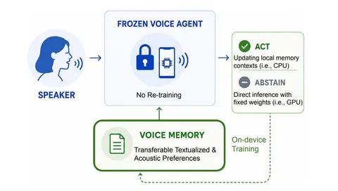
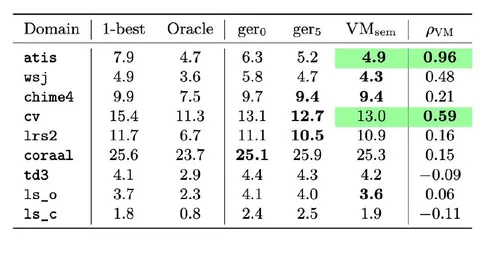

Сегодня разбираем работу от NVIDIA о том, как улучшить распознавание речи, автоматически подстраивая инструкции LLM-корректора под конкретный домен. Веса моделей при этом остаются неизменными.
Один из способов улучшить ASR на инференсе — взять несколько его гипотез и отдать LLM с фиксированным промптом вида «ты корректор, исправь ошибки и выдай правильную гипотезу». Такой подход называется GER (Generative Error Correction).
Проблема в том, что на доменах, где WER и так низкий, LLM может начать исправлять несуществующие ошибки: менять написание чисел, перефразировать текст, заменять слова синонимами. В итоге расхождений с эталоном становится больше.
Voice Memory автоматически формирует доменные инструкции, которые помогают корректору решать, когда и как стоит исправлять текст. Для этого в контекст добавляют небольшой файл
memory.md. Изначально память пустая, и корректор работает с обычным базовым промптом. Дальше её формируют на данных с эталонными транскрипциями:
1. Корректор обрабатывает батч ASR-гипотез, а его ответы сравнивают с эталонами.
2. LLM-оптимизатор анализирует удачные и неудачные исправления и предлагает добавить, удалить или заменить несколько правил в инструкции корректора.
3. Новую версию проверяют на отдельной выборке. Если выбранная метрика улучшилась, изменения принимают.
4. Иначе оставляют прежнюю память, а отклонённый вариант учитывают при следующей попытке.
Данные для формирования правил, отбора лучшей версии и финального теста разделены. По умолчанию авторы используют четыре эпохи. В основном эксперименте одна и та же MiniMax-M3 выступает и корректором, и оптимизатором.
В памяти появляются конкретные инструкции: сохранять исходное написание слов, избегать лишней нормализации, записывать денежные суммы в принятом для домена формате и прочее.
На инференсе LLM читает пять гипотез Whisper и память, затем либо исправляет транскрипцию, либо возвращает top-1 без изменений. Решение воздержаться от правок принимает сама LLM, поэтому её вызов всё равно нужен. Под агентностью в этом случае авторы понимают сочетание выбора действий, постоянной внешней памяти и её автоматического обновления по обратной связи.
Для оценки используют WER, а также RIR (Recoverable Information Ratio) — долю разрыва между WER исходной top-1-гипотезы и Oracle WER, которую удалось закрыть корректору. Oracle выбирает лучшую готовую гипотезу для каждой фразы, зная эталон. Генеративный корректор может собрать текст точнее любой гипотезы, поэтому RIR бывает и больше единицы.
Заметный выигрыш Voice Memory даёт на запросах об авиаперелётах (ATIS) и финансовых новостях (WSJ). В основном эксперименте на ATIS исходный ASR показывает WER 7,9%, GER без примеров — 6,3%, а Voice Memory — 4,9%. На WSJ GER ухудшает исходные 4,9% до 5,8%, тогда как Voice Memory снижает WER до 4,3%.
На других доменах результаты смешанные. Относительно того же GER на CHiME-4, CommonVoice и LRS2 WER немного снижается, а на CORAAL растёт. На LS-Clean Voice Memory лучше GER — 1,9% против 2,4%, но исходный ASR всё ещё лучше — 1,8%. Память делает корректор осторожнее, но не гарантирует улучшения распознавания.
Есть любопытная деталь: новые версии памяти можно отбирать по смысловой близости ответа к эталону. В отдельной проверке на двух доменах этот критерий дал немного лучший итоговый WER, чем отбор непосредственно по WER.
Главная ценность Voice Memory — возможность автоматически настроить LLM-корректор под конкретный домен на небольшом объёме размеченных данных. Исправления при этом сохраняются в виде общих правил в читаемом файле, их можно проверить, отредактировать и попробовать с другой моделью. При желании память можно дополнить few-shot-примерами.
Веса модели не меняются, дополнительных вызовов LLM на инференсе нет. Расходы приходятся только на предварительную оптимизацию. При этом корректор учится не редактировать уже правильные гипотезы, что для него полезный навык.
Никита Боровко

